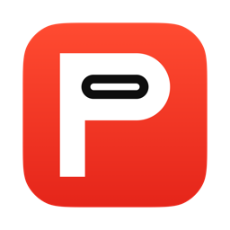

When the camera drops
A red glow and a repeating sound. Dismiss the alert, or reconnect your camera.

PortPanicA red glow and a repeating sound when your camera disconnects from Capture One.
Free. Version 3.0.0 Beta 2.Free. Version 3.0.0 Beta 2.
Pull the plug to try the alert.
Example camera. Turn sound on to hear the alert.
Capture One 16.x required
macOS 14 or later. Apple silicon and Intel.
A red glow and a repeating sound. Dismiss the alert, or reconnect your camera.
The red stops. A short green glow and sound confirm that Capture One sees your camera again.
The rest of the time, PortPanic stays in your menu bar.
Choose your sounds, colors, displays and audio output. Test both alerts without pulling a cable.
Monitoring stays on your Mac.
No account or analytics.
Daily update checks are on by default.
Turn them off in Settings. You choose when to install.
Free. Version 3.0.0 Beta 2.
Public beta for testing. Real-camera, extended-shooting and fresh-install checks are still in progress. Test with your setup before relying on it during a shoot.
Need help? Read the guide or report a problem.
No. PortPanic reads Capture One's tethered-camera list. USB events can detect a cable drop sooner. Capture One 16.x is required.
The alert leaves keyboard focus in the app you are using. Clicks pass through the glow. Only Dismiss takes a click.
If Capture One stops answering, PortPanic shows the last known status. That warning alone does not trigger a camera loss alert. Quitting Capture One or closing your session or catalog leaves PortPanic quiet.
The updater fetches release information and downloads. Camera monitoring, logs and diagnostic exports stay on your Mac. There is no analytics or system profiling.